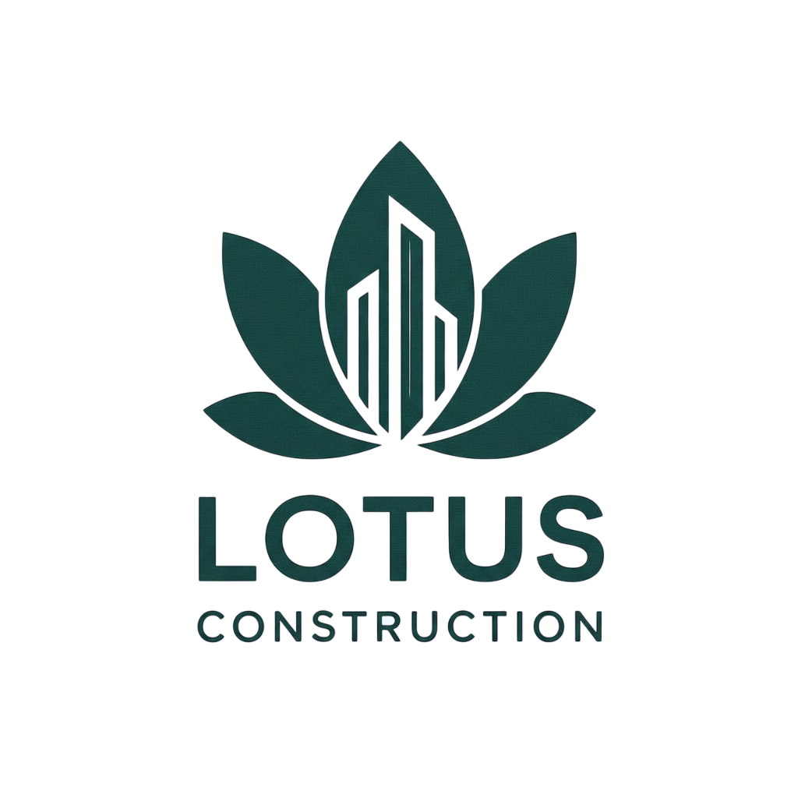
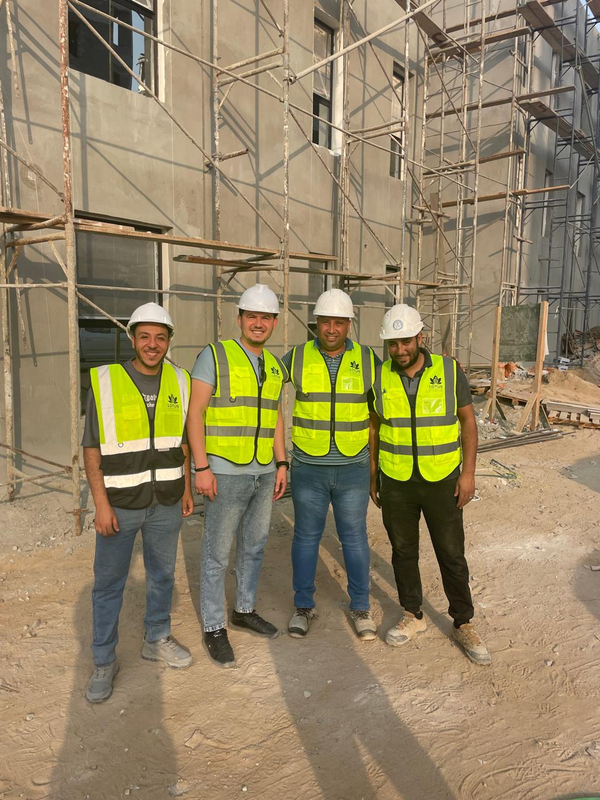
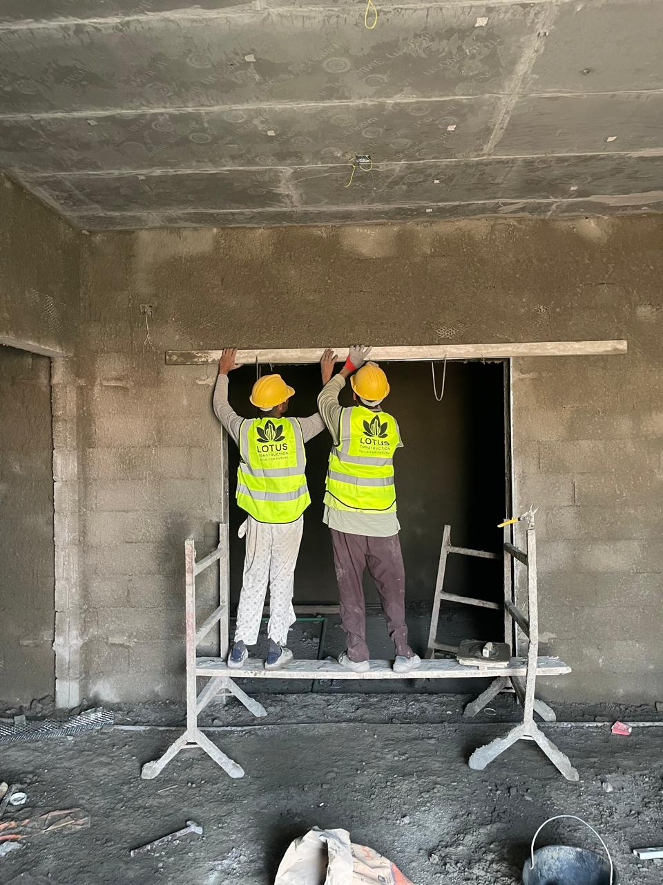
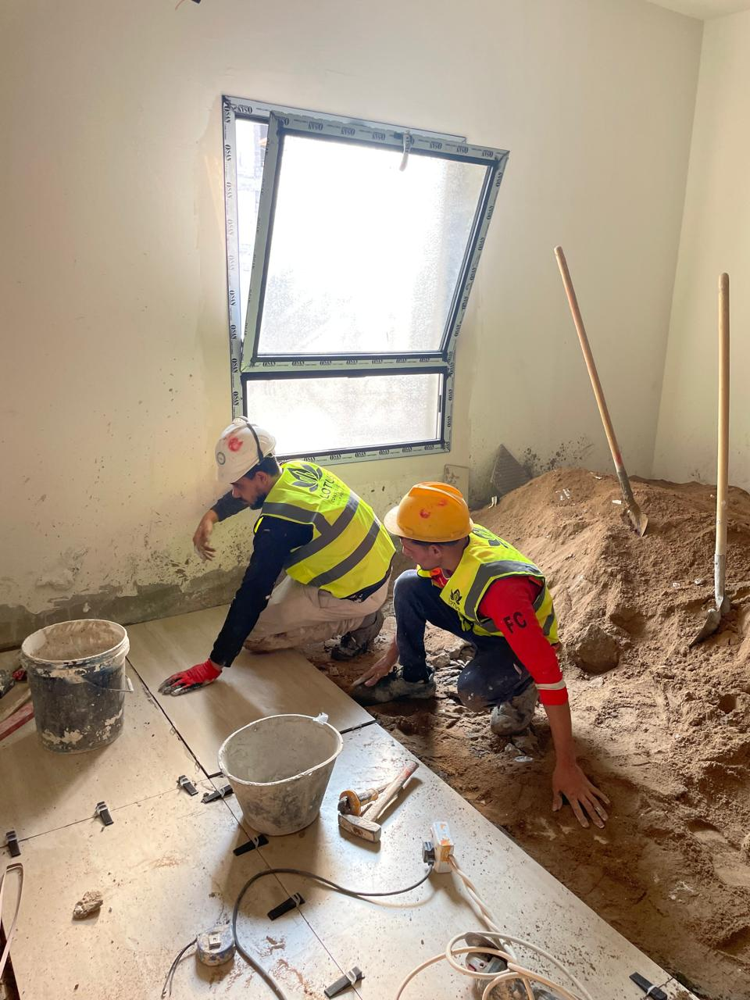
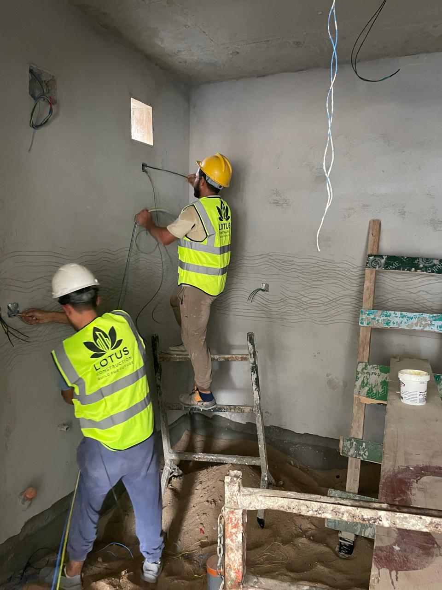
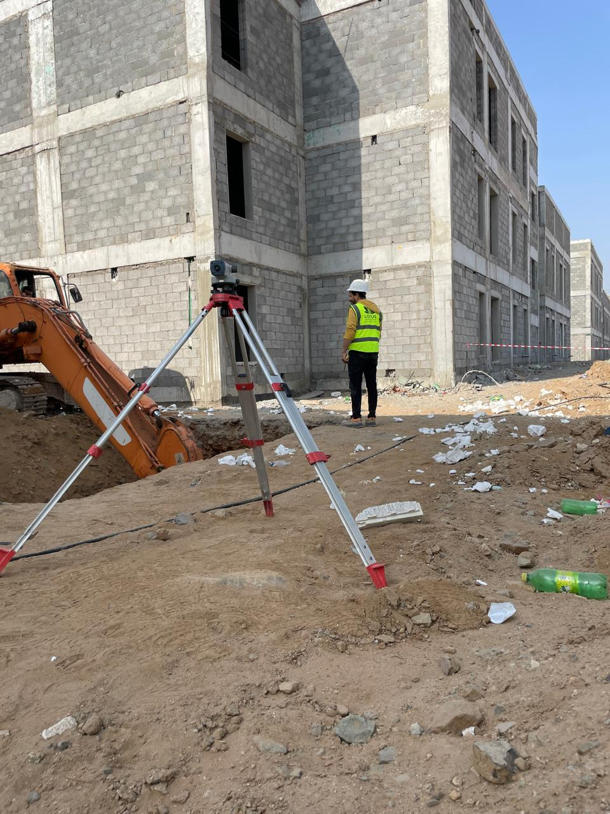

نطمح في شركة لوتس كونستركشن أن نكون وجهتكم الأولى كشريك هندسي رائد، يبتكر معايير جديدة للجودة المستدامة التي تتجاوز توقعاتكم.

LOTUS CONSTRUCTIONنطمح في شركة لوتس كونستركشن أن نكون وجهتكم الأولى كشريك هندسي رائد، يبتكر معايير جديدة للجودة المستدامة التي تتجاوز توقعاتكم.

شركة لوتس هي شركة هندسية متكاملة رائدة في مجالي المقاولات العامــــــــــــــــــــة والاستشارات الهندسية؛ تقدم حلولاً شاملة تبدأ من الدراسات الأولية والتصـاميــــــــــــــم المعمارية والإنشائية، وصولاً إلى التنفيذ الكامل للمشاريع وتطوير البنية التحتـية، تعتـمد الشـركة على كـوادر هندسـية وفنيـة مؤهلـة تدمج الابتكار بالدقة التنفيـذيـة، مع تـوظيف التقنـيات الحديثة لضمــان أعلى معاييـر الجـودة والأمان وتقليل الهــدر في كافة المراحــل.

الالتزام بكافة المعايير الأخلاقية في كل تعامل وضمان الثقة الدائمة.
التطور المستمر والحفاظ على التجديد مع مواكبة التغييرات الحديثة.
تقديم حلول من الطراز الاول عن طريق الحلول المبتكرة
ضمان نجاح عملائنا عن طريق شراكات طويلة المدى مبنية على الثقة والنمو

نطمح في شركة لوتس كونستركشن أن نكون وجهتكم الأولى كشريك هندسي رائد، يبتكر معايير جديدة للجودة المستدامة التي تتجاوز توقعاتكم، نلتزم بصياغة واقع عمراني متميز، يجمع بين دقة التنفيذ ومعايير الاستدامة الحديثة؛ لضمان بناء صروح إنشائية تليق بتطلعاتكم وتواكب التطور العالمي، محولين كل مشروع إلى أصل ذو قيمة مضافة على المدى الطويل.

